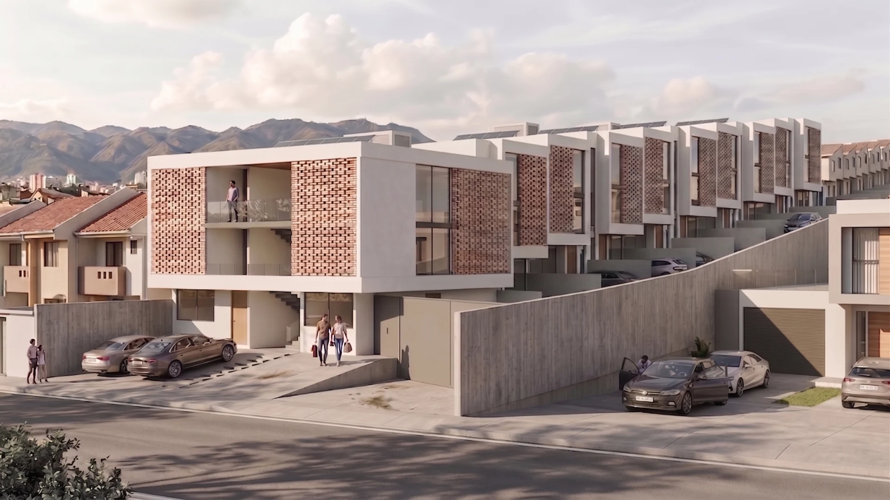
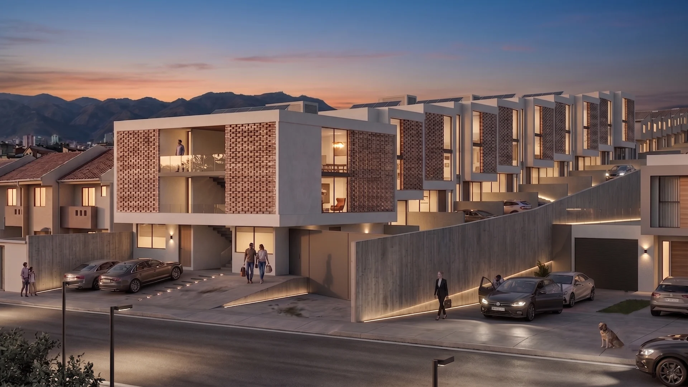

DE LA VERBENA · CUENCAARQUITECTURA PARA VIVIR
TRIBECCA
Un lugar.
Muchas formas de vivirlo.
Luz de día
EL PROYECTOCUENCA, ECUADOR
ARQUITECTURA
CON CARÁCTER.
Celosías de ladrillo, líneas definidas y una paleta de materiales cálidos. Una propuesta contemporánea para habitar Cuenca.
Casas y suites con espacios que acompañan tu día a día, desde la primera luz hasta el caer de la tarde.
Conoce los espaciosINTERIORESESPACIOS QUE SE CONECTAN
ESPACIOS PARA
COMPARTIR.
Sala, comedor y cocina
en una planta social abierta.
TU ESPACIO,
A TU RITMO.
Un ambiente para descansar.
SUITESOtra forma
Otra forma
de habitar.
Ambientes integrados y una paleta natural para acompañar lo cotidiano.
Consulta por las suites ↗DISTRIBUCIÓN DE LA CASATRES NIVELES
UN ESPACIO
PARA CADA
MOMENTO.
- Sala y comedor
- Cocina
- Baño social
- Área exterior
Plano de distribución · Sin escala
UBICACIÓNDE LA VERBENA · CUENCA
CONECTADO
CON TU
DÍA A DÍA.
Conexión desde la Av. de las Américas por la Av. del Tejar, hasta De la Verbena.
550 mRUTA DE REFERENCIA
10 minA PIE
Desde el entorno de Supermaxi Las Américas, según la captura de Google Maps aportada para el proyecto. El tiempo puede variar.
SupermercadoComercios y gastronomíaParadas de busServicios del sector
Abrir Google Maps CROQUIS REFERENCIAL · SIN ESCALA
EL MISMO LUGAR. OTRA LUZ.AL CAER
AL CAER
LA TARDE.
CONOCE TRIBECCACASAS & SUITES
TU PRÓXIMO
ESPACIO
TE ESPERA.
Solicita disponibilidad y agenda una presentación del proyecto.
Conversemos por WhatsAppRAÚL GARCÍA+593 98 429 1918